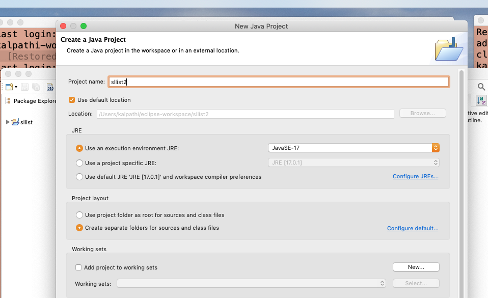
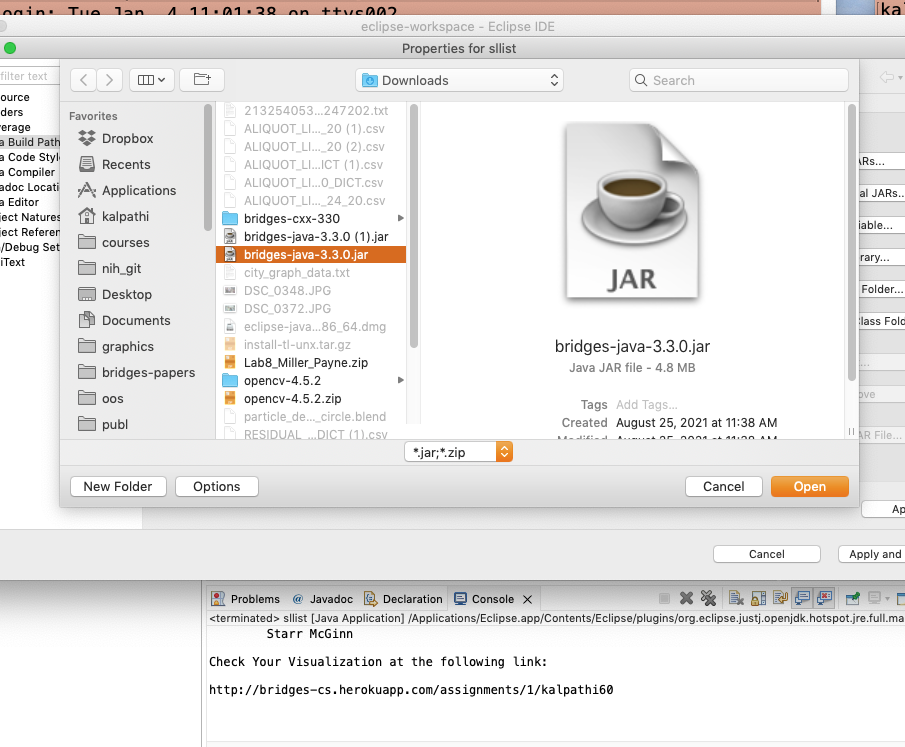
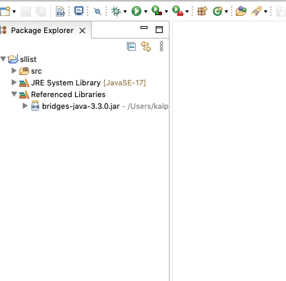

Step 1: Install Eclipse
- If you do not have Eclipse
installed, download it from the
Eclipse site
and install it on your computer .
Step 2: Create Bridges Account
- Visit the Bridges
main page and create yourself an account
by clicking the login button
on the top navigation bar. Please ensure that
your user id is devoid of spaces (good idea to use your school
email id), as it will be
used as part of the web link for your projects.
After creating your account, click on your profile
name in the upper right corner to view your
profile. Once in your profile, you will see your
API Key; you will need this API key in part 2
of the tutorial(as well as in every BRIDGES program
you write). NOTE: Make sure to remember
your password. There is no password recovery option,
and you can only have one account per email address.
Step 3: Create a Java Project
- File-->New-->Java Project
|

|
Step 4: Check Java version
- In the new window change the Project name
field to your project name, then make sure the
JRE Execution Environmen is JavaSE-8 or above .
Here we are using Java version 17.
Click Finish n the lower right-hand corner.
|

|
Step 5a: Import Jar File into project
- Download the latest Bridges Jar file from
Bridges home page and save it somewhere convenient on your drive.
- On Eclipse, right-click on your project in the
Package Explorer window and then click on
Java Build Path --> Add External Archives. You should see the following configuration (this is on the Mac, which brings up a file browser).
|
Step 5b: Import BRIDGES Jar file
- Locate and select the Bridges.jar file you saved
earlier (bridges-java-3.4.2.jar) to import it into your new project (current version 3.4.2)
|

|
Step 6: Verification
- To verify that you have successfully imported the Jar
file, look under the Referenced Libraries section of
your project in the Package Explorer window in Eclipse.
- If you have got a Project in the Eclipse Package
Explorer with your username as the project name, and the
referenced libraries section shows the bridges Jar file,
you have completed the setup and are ready to build
the Singly Linked List class!
|

|
Step 7. Load and Run a BRIDGES Example program.
- Go to this
BRIDGES Tutorial and copy/paste the Java tutorial program into
the main window into a new file. Make sure the file name matches the class name!
- Set an assignment number, and your credentials in the line that creates
the Bridges object at the beginning of the program.
- Run the program by hitting the Run button (Run it as a Java application)
- You will see a web link printed on the console. Navigate to
the site to visualize the output.
|

|